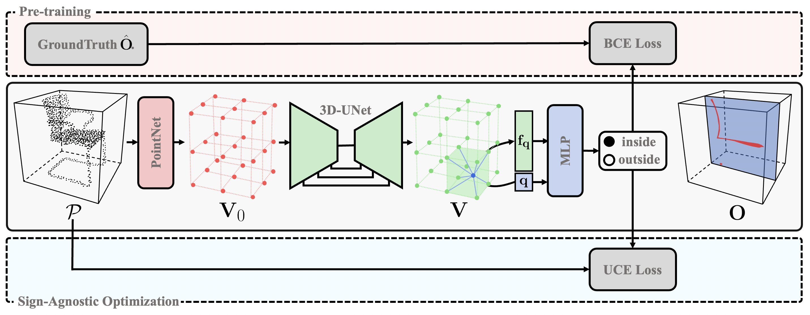
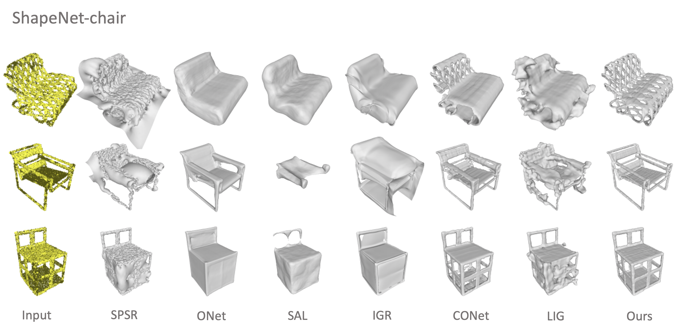
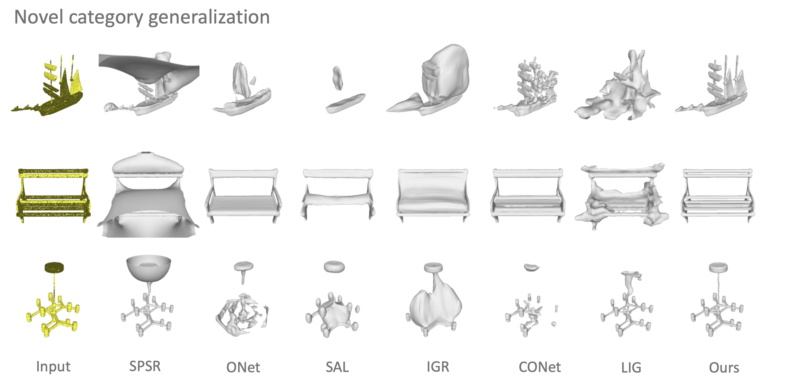
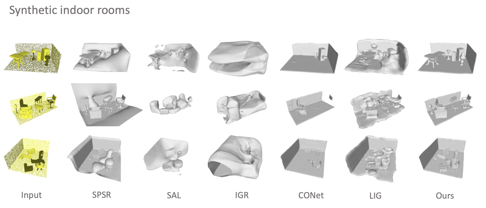
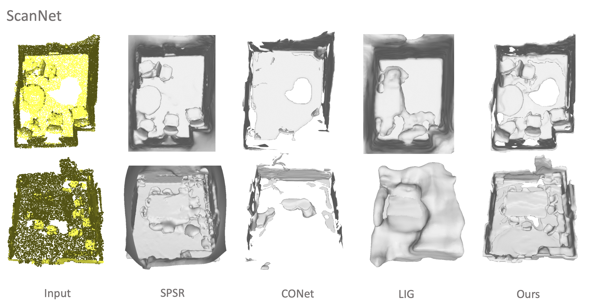

SA-ConvONet: Sign-Agnostic Optimization of Convolutional Occupancy Networks
3D Shape Modeling, Neural Implicit Field, and Surface Reconstruction
Jiapeng Tang, Jiabao Lei, Dan Xu, Feiying Ma, Kui Jia, Lei Zhang
Surface reconstruction from point clouds is a fundamental problem in the computer vision and graphics community. Recent state-of-the-arts solve this problem by individually optimizing each local implicit field during inference. Without considering the geometric relationships between local fields, they typically require accurate normals to avoid the sign conflict problem in overlapped regions of local fields, which severely limits their robustness to raw scans where surface normals could be unavailable. Although SAL breaks this limitation via sign-agnostic learning, further works still need to explore how to extend this technique for local shape modeling. To this end, we propose to learn implicit surface reconstruction by sign-agnostic optimization of convolutional occupancy networks, to simultaneously achieve advanced scalability to large-scale scenes, generality to novel shapes, and robustness to raw scans in a unified framework. Concretely, we achieve this goal by a simple yet effective design, which further optimizes the pretrained occupancy prediction networks with an unsigned cross-entropy loss during inference. The learning of occupancy fields is conditioned on convolutional features from an hourglass network architecture. Extensive experimental comparisons with previous state-of-the-arts on both objectlevel and scene-level datasets demonstrate the superior accuracy of our approach for surface reconstruction from unorientated point clouds.
How to simultaneously achieve advanced scalability to large-scale scenes, generality to novel shapes, and robustness to raw scans in a unified framework?
Sign-Agnostic Optimization of Convolutional Occupancy Networks

We propose a simple yet effective solution that further optimizes the pre-trained occupancy prediction networks via sign-agnostic learning. The learning of occupancy fields is conditioned on convolutional features from an hourglass network (e.g. U-Net).
Our solution is motivated by two key characteristics. The first characteristic is that, after being pre-trained on the accessible datasets with ground-truth signed fields, the occupancy decoder can provide a signed field as initialization for the test-time optimization. Thus we can further apply unsigned objectives to optimize occupancy prediction networks, maximizing the consistency between the desired iso-surface with the observed un-oriented point cloud. The second characteristic is that, the U-Net aggregates both local and global information in an hourglass convolutional manner. The use of local shape features not only preserves the fine-grained geometries, but also enables the surface recovery of largescale indoor scenes. The integrated global shape features can enforce geometric consistency between learned local geometries and guarantee the assembly of local fields as a globally consistent one, although we do not utilize guidance from additional normal information.
Object-level Reconstruction
 
Scene-level Reconstruction

Real-world Scenes
